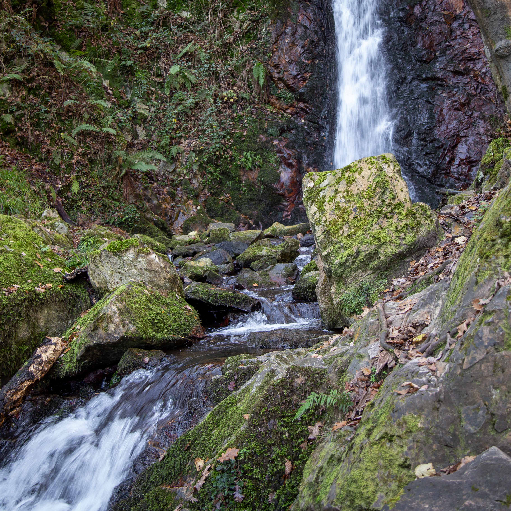
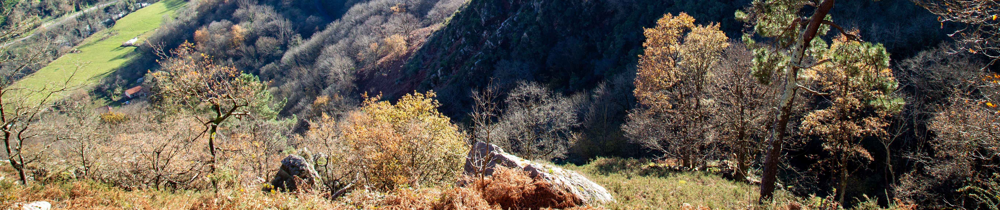
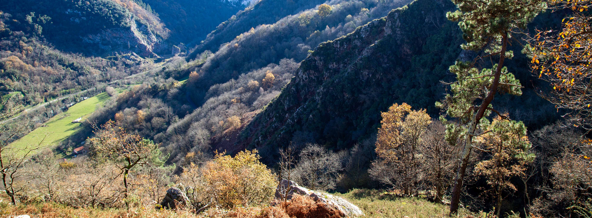

.jpg)
.jpg)
.png) Construcciones
Construcciones.jpg)
.png) Patrimonio Industrial de Trubia
Patrimonio Industrial de Trubia
Actividades
.png) Parques
Parques
El principal parque de Trubia es el de Cataluña: Superficie: 5.216 metros cuadrados. Riego automático, Juegos infantiles (0 a 6 años), Mesas de futbolín, Pista polideportiva, Paseos con bancos. Especies predominantes: Arces, Cerezos de flor, Cercis, Sequoias, Plátanos de sombra, Magnolios, Thujas. Esta también el parque del Ferrocarril.
.png) Zona Infantil
Zona Infantil
Estos espacios estan ubicados en las zonas verdes, el del parque del Ferrocarril tiene zona acotada, disponen de arbolado y juegos infantiles, entretenimiento para los más pequeños donde pueden disfrutar de toboganes, casitas, columpios, balancines, tramos de escalada etc.
.png) Deportes
Deportes
En los parques se pueden localizar mesas de ping-pon, futbolines, canchas de baloncesto y futbol, además, tanto los vecinos de esta localidad y de los pueblos cercanos cómo las personas que disfrutan de la naturaleza tienen facil acceso a zonas de senderismo por rutas con cascadas y de montaña, alguna ruta para bicicletas, pueden practicar hasta el barranquismo.
Actividades
Parques
.jpg)
.png) Parques
Parques
El principal parque de Trubia es el de Cataluña: Superficie: 5.216 metros cuadrados. Riego automático, Juegos infantiles (0 a 6 años), Mesas de futbolín, Pista polideportiva, Paseos con bancos. Especies predominantes: Arces, Cerezos de flor, Cercis, Sequoias, Plátanos de sombra, Magnolios, Thujas. Esta también el parque del Ferrocarril.
Zona Infantil
Zona Infantil
Estos espacios estan ubicados en las zonas verdes, el del parque del Ferrocarril tiene zona acotada, disponen de arbolado y juegos infantiles, entretenimiento para los más pequeños donde pueden disfrutar de toboganes, casitas, columpios, balancines, tramos de escalada etc.
Deportes
Deportes
En los parques se pueden localizar mesas de ping-pon, futbolines, canchas de baloncesto y futbol, además, tanto los vecinos de esta localidad y de los pueblos cercanos cómo las personas que disfrutan de la naturaleza tienen facil acceso a zonas de senderismo por rutas de montaña y con cascadas, donde se puede practicar hasta el barranquismo y alguna ruta para bicicletas.
.jpg)
 Cómo llegar
Cómo llegar
Bus Urbano y Tren de Cercanías
Para poder llegar a Trubia y a San Andrés has de subirte a la LÍNEA L1/ L2 TUDELA VEGUÍN – SAN ANDRÉS del Bus Urbano de Oviedo. También es posible a través del tren de cercanías desde Oviedo y desde Gijón.
Explora las Otras Zonas Verdes de Oviedo

Zonas Verdes
Descubre tu refugio natural en Oviedo, explora los diversos oasis y remansos de paz que la ciudad tiene para ofrecer.
Campillín
DescubrirLa Rodriga
ExplorarSantullano
VisitarSan Pedro
RecorrerFinlandesa
AventurarseLas Caldas
SumergirseOlloniego
ConocerCascadas Guanga
DescubrirAl igual que en los parques, en estas zonas verdes podrás encontrar diferentes ACTIVIDADES
Bosques antiguos
 Zonas de sombras y humedad
Zonas de sombras y humedad

Bosques autóctonos, hábitat natural de la fauna y flora silvestres, helechos, variedad de musgos y en otoño setas.
Los bosques de ejemplares grandes de arces (pláganos), castañales, abedules, hayas (fayas) o avellanos (ablanos). Especies que dan cobijo a singulares animales como es el Oso Pardo, emblema de este valle, y que cada vez más se deja ver sorprendentemente cerca de Oviedo. También corzos, venados, zorros, lobos, jabalíes, tejones, ardillas, etc.
Los grandes árboles acompañan al arroyo en el que se han formado una serie de cascadas más o menos caudalosas dependiendo de la época del año y de las lluvias que puedan caer.
El paisaje y el sonido del agua inunda todo el entorno, aportandonos un gran bienestar físico y mental.
Paisajes y árboles
.png) Arroyos y Cascadas
Arroyos y Cascadas
En las riberas del arroyo Buanga
Saltos de Agua
Pequeños Rápidos
Cascadas en Cola de Caballo
Senderos Sinuosos
Bosques para perderte
Bosques frondosos
.jpg)
Cascadas
Saltos de Agua
.jpg)
Cascadas
Rápidos del Buanga
Cascadas
En Cola de Caballo
.jpg)
Sendas
Senderos Sinuosos
Sendas
Perderte por los Bosques
Bosques
Accesibles y Frondosos
.png) Otoño y su Colorido
Otoño y su Colorido


La Magia del Otoño en Las Cascadas Guanga
Sumérgete en la belleza y el encanto de la temporada otoñal en las Cascadas de Guanga. Los impresionantes colores de los árboles y plantas, como hayas, castaños y arces, te rodearán en un espectáculo natural sin igual. Déjate maravillar por la calidez y el resplandor del otoño mientras disfrutas de un paseo por este paraíso en Oviedo.
Conocimientos y Recomendaciones para los Deportes en la
Naturaleza
La zona de Trubia, San Andrés, los Valles del oso, son aptas para practicar actividades y deportes de naturaleza.
Tienen inicio rutas de senderismo, escalada, bicicleta, pesca, senderismo y observación de fauna.
Desde San Andrés avanza la senda cicloturista más famosa de la cordillera cantábrica hacia los recónditos valles de Quirós y Teverga.
La zona es de gran interés natural.
Especies vegetales y fauna, origen y tipo de rocas, orografía del territorio, cascadas, formaciones geológicas, aprovechamiento tradicional del monte.
Conviene tener conocimientos de senderismo.
Botas de montaña, chubasquero, mochila, protección solar y gafas de sol, gorra, bastones etc.
Pistas pedregosas y en algunas zonas embarradas.
Los itinerarios dependerán de las condiciones climatológicas.
Terrenos con cierto grado de pendiente, mucha humedad y con poca visibilidad por el tipo de bosque en que se encuentran.
Se recomienda tener cierta preparación física e importante, ser previsor y adelantarse a posibles imprevistos.
La ruta de las Cascadas del Arroyo Buanga o la Cascada de Guanga
Itinerarios lineales
.jpg)
.png)
.png) Parque de Invierno, Fuso la Reina-Trubia por la Senda Verde
Parque de Invierno, Fuso la Reina-Trubia por la Senda Verde .png)
El primer tramo permite observar las canalizaciones hacia la central de Puerto, acompañados con el sonido del agua entre vegetación, castaños y prados con vacas. El puente colgante de 96 metros sobre el río Nalón se recomienda cruzarlo sin detenerse y los ciclistas a pie. Las distancias cortas y el paisaje verde hacen que valga la pena el paseo, incluso al descender por la carretera. De Puerto a Caces hay menos de dos kilómetros, y de Caces a Las Caldas, solo uno.
Desde Caces sigue la senda, hasta el final del municipio va a ser compartida a tramos con la carretera local, llana y el caminante tiene a la izquierda, Pintoria; a la derecha, el valle de Godos; y enfrente, las peñas del monte Fansorda.
Tras unos 900 metros, el camino baja y entra en el valle de Trubia, con la vía del tren a la izquierda sobre un muro antiguo de piedra y el río a la derecha.
A 3,6 kilómetros de Caces, se entra en Trubia por la zona industrial, enlazando con el final de la pasarela de Soto a la fábrica. La senda continúa junto al parque, cruzando el puente y siguiendo por la acera con el río a la derecha, llegando al Parque de Cataluña.
La ruta continúa a San Andrés por una estrecha carretera compartida con vehículos. Enfrente se ve el peñón de Guanga con sus cascadas. Ya en San Andrés, última parada del autobús urbano (L-1), hay un lavadero y una fuente. Enfrente, una pequeña construcción sobre el río, un "potro" usado para acondicionar los cascos del ganado y asear a los animales.
Parque de Invierno, Fuso la Reina-Trubia por la Senda Verde
El primer tramo permite observar las canalizaciones hacia la central de Puerto, acompañados con el sonido del agua entre vegetación, castaños y prados con vacas. El puente colgante de 96 metros sobre el río Nalón se recomienda cruzarlo sin detenerse y con los ciclistas a pie. Las distancias cortas y el paisaje verde hacen que valga la pena el paseo, incluso al descender por la carretera. De Puerto a Caces hay menos de dos kilómetros, y de Caces a Las Caldas, solo uno.
Desde Caces sigue la senda, hasta el final del municipio va a ser compartida a tramos con la carretera local, llana y el caminante tiene a la izquierda, Pintoria; a la derecha, el valle de Godos; y enfrente, las peñas del monte Fansorda.
Tras unos 900 metros, el camino baja y entra en el valle de Trubia, con la vía del tren a la izquierda sobre un muro antiguo de piedra y el río a la derecha.
A 3,6 kilómetros de Caces, se entra en Trubia por la zona industrial, enlazando con el final de la pasarela de Soto a la fábrica. La senda continúa junto al parque, cruzando el puente y siguiendo por la acera con el río a la derecha, llegando al Parque de Cataluña.
La ruta continúa a San Andrés por una estrecha carretera compartida con vehículos. Enfrente se ve el peñón de Guanga con sus cascadas. Ya en San Andrés, última parada del autobús urbano (L-1), hay un lavadero y una fuente. Enfrente, una pequeña construcción sobre el río, un "potro" usado para acondicionar los cascos del ganado y asear a los animales.

.jpg)
Trubia-Picu Lloé (Llovio)
Cumbres de modesta altitud
Entorno y vistas incomparables en pleno centro de la región: el Picu Lloé.
Salimos del aparcamiento situado frente al C.P. El Villar.
Una pista se abre a nuestra derecha. Comenzaremos una suave subida.
En el cruce, a la derecha entramos en una pista forestal entre un bonito bosque.

.jpg)
.jpg)
Una cabaña precederá una amplia vista de la zona.
La subida final, un sendero algo escondido que veremos a nuestra derecha, a unos 100 metros.
La pista irá cerrándose, a medida que vamos subiendo nos cruzaremos con una cómoda pista por la que seguimos.
A nuestra izquierda, inconfundible y muy cercana, la cima.
Queda una última y corta subida antes de llegar al vértice geodésico que corona la cima.
Veremos la Sierra del Fario y la del Sueve, la del Aramo y los cercanos picos Loral y Buey Muerto.
.jpg)
.jpg)
.jpg)
.jpg)